12 Proteintrafik i cellen
Ett stort postsorteringsverk tar varje dag emot miljontals brev och paket. Nästan inget av dem kommer fel, eftersom varje försändelse har en adress och sorteringsmaskinerna kan läsa den. En cell har samma problem, fast i mycket mindre skala. Människokroppen består av ungefär 37 000 miljarder celler, och i var och en tillverkas hela tiden tusentals olika proteiner. De flesta tillverkas på samma ställe, i cellvätskan, men de ska användas på helt olika ställen: i cellkärnan, i mitokondrierna, i cellmembranet eller utanför cellen. Hur vet ett nytillverkat protein vart det ska?
Svaret är att proteinerna bär sin egen adresslapp, en kort bit av aminosyrakedjan som cellens maskineri kan läsa. I det här kapitlet ser vi hur adresslapparna ser ut, vilka “brevbärare” och “portar” som läser dem, och vad som händer när något går fel. Kapitlet bygger på det vi lärt oss om proteinsyntes i Kapitel 1 och om cellens membran och organeller i Kapitel 7.
12.1 Hur många proteiner finns det?
För att förstå trafiken måste vi först veta hur många “försändelser” det handlar om. Proteinerna kodas av DNA, och för omkring trettio år sedan började laboratorier över hela världen att läsa av, sekvensera, hela arvsmassan hos olika organismer (Avsnitt 3.6). Man började med små genom, från bakterier och mitokondrier, och år 2000 presenterades ett första utkast av människans arvsmassa. Sedan dess har mängden sekvenserat DNA vuxit explosionsartat. De stora offentliga databaserna innehåller i dag tiotusentals miljarder baspar, fritt tillgängliga för forskare i hela världen (Avsnitt 11.5.5).
När människans arvsmassa var färdigläst blev många förvånade. Man hade trott att den skulle innehålla kanske 50 000 gener som kodar för proteiner, men det var bara omkring 20 000. Som vi såg i Tabell 11.1 har en liten ogräsväxt, backtrav, fler sådana gener än vi, och bakjäst har omkring 6 000. De proteinkodande delarna utgör bara någon procent av vårt DNA; resten har andra uppgifter eller okänd funktion (Avsnitt 11.10).
Att bakjäst klarar sig med 6 000 proteiner och människan bara har drygt tre gånger så många kändes för en del forskare nästan förolämpande. Men siffran berättar inte hela sanningen. En och samma gen kan ge flera olika proteiner, eftersom budbärar-RNA:t kan klippas ihop på olika sätt (Avsnitt 3.2.2) och eftersom proteinerna kan förändras efter att de tillverkats, till exempel genom att socker eller fosfatgrupper fästs vid dem. Räknar man alla sådana varianter blir det i storleksordningen 100 000 olika proteiner, kanske fler. Mellan olika människor är skillnaderna däremot små: vårt DNA är till 99,9 procent identiskt, varifrån vi än kommer.
Alla celler tillverkar inte alla proteiner, men varje cell gör tusentals olika. Det är de försändelserna som ska sorteras.
12.2 Var tillverkas proteinerna?
Innan vi kan följa ett protein till dess mål måste vi veta var det startar. Svaret beror på hur cellen är byggd.
Bakterier är enkelt byggda. Deras DNA ligger fritt i cellen, och nästan alla proteiner tillverkas och används i samma utrymme. Djur- och växtceller är däremot uppdelade i många rum, organeller, omgivna av membran (Avsnitt 7.4): cellkärnan, det endoplasmatiska nätverket, golgiapparaten, lysosomerna, mitokondrierna och, hos växter, kloroplasterna.
Nästan allt DNA finns i cellkärnan, och därifrån kodas mer än 98 procent av cellens proteiner. Men cellkärnan tillverkar inga proteiner. Där sker bara transkriptionen, då DNA skrivs av till budbärar-RNA, mRNA (Avsnitt 1.8). mRNA:t förs ut genom kärnporerna till cytosolen, cellvätskan utanför organellerna. Där läses det av ribosomer som bygger proteinerna (Avsnitt 1.9). Det betyder att även de proteiner som ska arbeta inne i kärnan tillverkas ute i cytosolen och måste transporteras tillbaka in.
Ribosomerna i cytosolen är av två slag. En del flyter fritt. Andra sitter fast på det endoplasmatiska nätverkets membran, vilket ger nätverket ett knottrigt utseende i elektronmikroskopet. Varför de sitter där förklaras i avsnittet om den sekretoriska vägen nedan.
Organeller med eget DNA
Det finns två undantag från regeln att allt DNA finns i kärnan. Mitokondrierna har ett eget litet DNA, och det har även växternas kloroplaster. De har också egna ribosomer och tillverkar själva de proteiner som deras eget DNA kodar för.
Förklaringen ligger långt tillbaka i evolutionen och kallas endosymbiontteorin. För mer än en och en halv miljard år sedan levde en cell som inte kunde använda syre för att bryta ned sin näring helt. Den tog upp en bakterie som kunde det. I stället för att bakterien bröts ned fortsatte den att leva och föröka sig inuti värdcellen, och båda tjänade på samarbetet: värdcellen fick tillgång till den effektiva syreandningen, och bakterien fick skydd och näring. Med tiden blev bakterien en mitokondrie. Senare tog en cell som redan hade mitokondrier på samma sätt upp en fotosyntetiserande cyanobakterie, och den blev kloroplasten. Så uppstod förfäderna till dagens växter och alger (Figur 12.1).
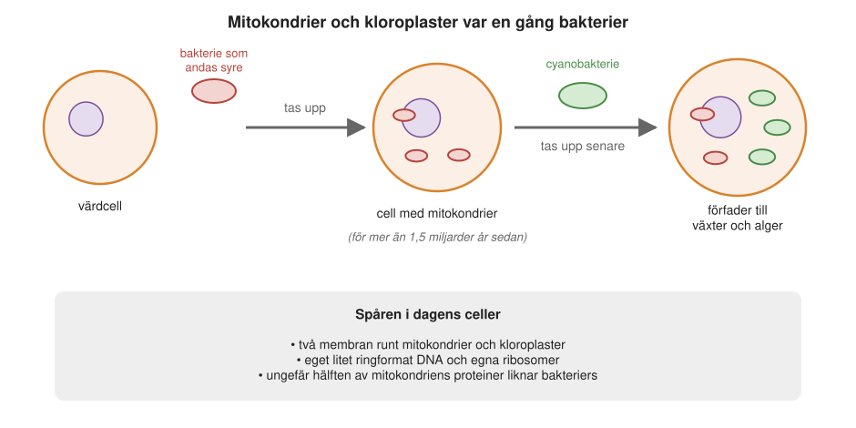
Under de mer än en miljard år som gått har det mesta av de gamla bakteriernas gener flyttat över till cellkärnan. Det som finns kvar är ett litet rest-DNA. Mitokondrierna är alltså inte bakterier längre, men ungefär hälften av deras proteiner liknar fortfarande bakteriernas. Resten är nya uppfinningar som bara finns hos eukaryoter, organismer med cellkärna.
Människans mitokondriella DNA är en ring med 16 569 baspar som kodar för bara 13 proteiner (Figur 12.2). Det är få, men de är viktiga. Alla är delar av de stora proteinkomplexen i andningskedjan och av ATP-syntas, de maskiner som tillverkar det mesta av vårt ATP (Kapitel 9).
Hos andra organismer varierar antalet: malariaparasiten Plasmodium har bara 3 proteingener kvar i sina mitokondrier, medan vissa encelliga organismer, som Reclinomonas, har över 60. Men en mitokondrie innehåller omkring tusen olika proteiner, så även i det mest generösa fallet tillverkas bara en bråkdel av dem i organellen. Detsamma gäller kloroplasten. Dess DNA är flera gånger större och kodar för omkring hundra proteiner, men en kloroplast innehåller 2 000–3 000. Resten kodas i kärnan och måste föras in utifrån.
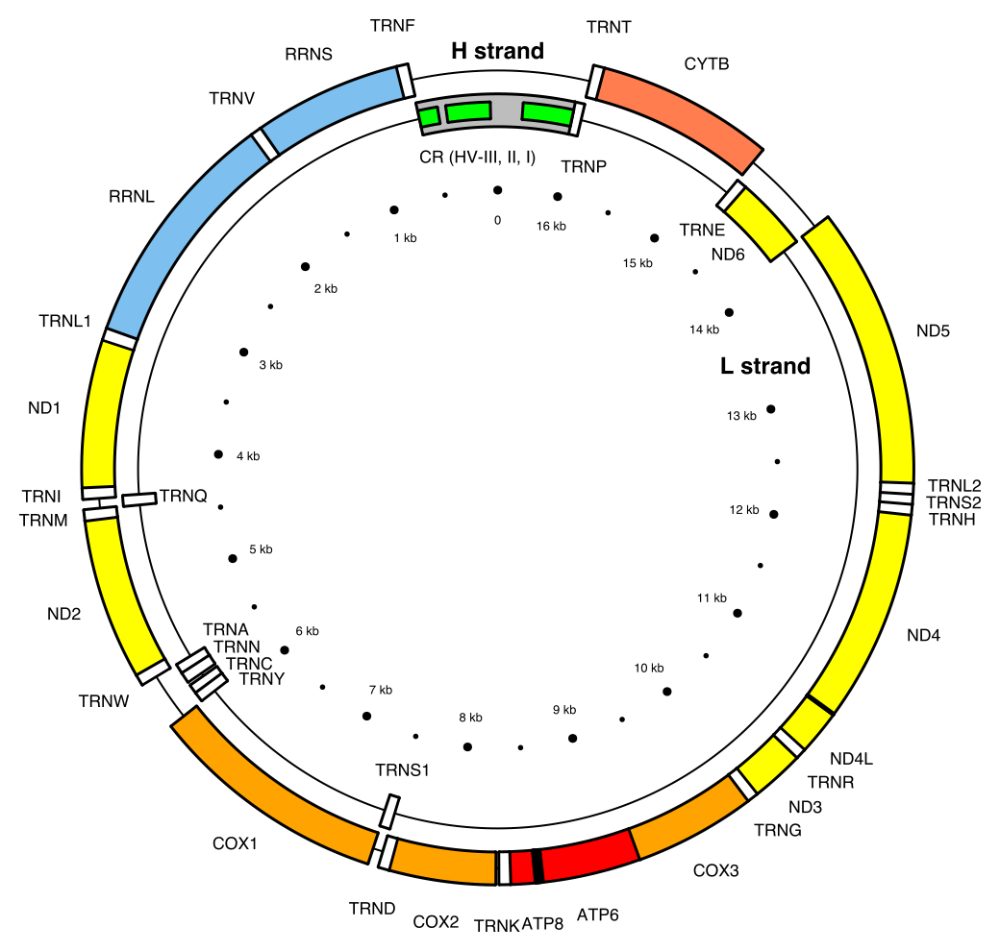
Att mitokondriernas proteiner kodas på två ställen, i organellen och i kärnan, märks också när något går fel. Eftersom mitokondrierna levererar energi till hela kroppen kan fel i deras proteiner ge allvarliga sjukdomar. Det drabbar särskilt organ som gör av med mycket energi: hjärnan, musklerna, hjärtat och ögonen. Ett exempel är Lebers hereditära opticusneuropati, där synnerven skadas så att man plötsligt förlorar synen, ofta i ung vuxen ålder. Den beror på mutationer i mitokondriernas egna gener för andningskedjan. Ett annat är en form av epilepsi med muskelsjukdom, som beror på en mutation i en av mitokondriernas tRNA-gener. Men de flesta mitokondriella proteiner kodas i kärnan, så mitokondriella sjukdomar kan lika gärna bero på mutationer i kärnans DNA.
En enorm trafik
Nu förstår vi omfattningen av problemet. Omkring tusen olika proteiner ska in i varje mitokondrie, och flera tusen i varje kloroplast, trots att de tillverkats ute i cytosolen. Alla proteiner som arbetar i cellkärnan ska in i kärnan. Därtill kommer de proteiner som ska ut ur cellen eller sitta i cellmembranet. Varje sekund skickas mängder av nytillverkade proteiner åt olika håll, och nästan alla kommer rätt.
12.3 Adresslappar på proteinerna
Hur kan nästan alla dessa proteiner hamna rätt? På 1970-talet visade den tysk-amerikanske cellbiologen Günter Blobel (Figur 12.3) vid Rockefelleruniversitetet i New York att nytillverkade proteiner har en inbyggd signal, en kort sträcka av aminosyror, som styr dem till rätt ställe i cellen. Han jämförde signalerna med postnummer eller adresslappar på resväskor: utan att öppna paketet kan sorteringsmaskineriet läsa adressen och skicka det rätt. Blobel fick Nobelpriset i fysiologi eller medicin 1999 “för upptäckten att proteiner har inbyggda signaler som styr deras transport och placering i cellen”.
Blobel växte upp i Schlesien och flydde som barn med sin familj till Dresden strax före bombningarna av staden 1945. Han skänkte hela sin prissumma till återuppbyggnaden av Dresden, framför allt av den förstörda kyrkan Frauenkirche och av en ny synagoga.
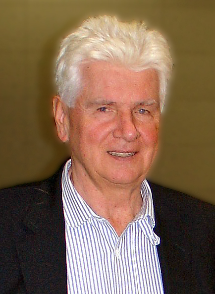
Adresslapparna ser olika ut beroende på vart proteinet ska. Proteiner som ska till det endoplasmatiska nätverket, till mitokondrier och till kloroplaster har sin signal längst fram, i den ände av aminosyrakedjan som tillverkas först, N-änden (eller N-terminalen). Den andra änden kallas C-änden. En signal som sitter i början av kedjan och klipps bort när proteinet har kommit fram kallas en signalpeptid. Proteiner som ska till cellkärnan eller till de små organeller som heter peroxisomer har helt andra sorters signaler.
Adresslappen avgör inte bara målet utan också vägen dit. Cellen har två huvudvägar, som skiljer sig i grunden från varandra (Figur 12.4):
- Den sekretoriska vägen. Proteiner som ska ut ur cellen, till cellmembranet eller till lysosomerna förs in i det endoplasmatiska nätverket redan medan de tillverkas. Därifrån skickas de vidare i små membranblåsor, som paket.
- Import av färdiga proteiner. Proteiner som ska till mitokondrier, kloroplaster, cellkärnan eller peroxisomerna tillverkas färdigt av fria ribosomer i cytosolen. Först därefter förs de in i sin organell, ett och ett, genom särskilda porer i membranet.
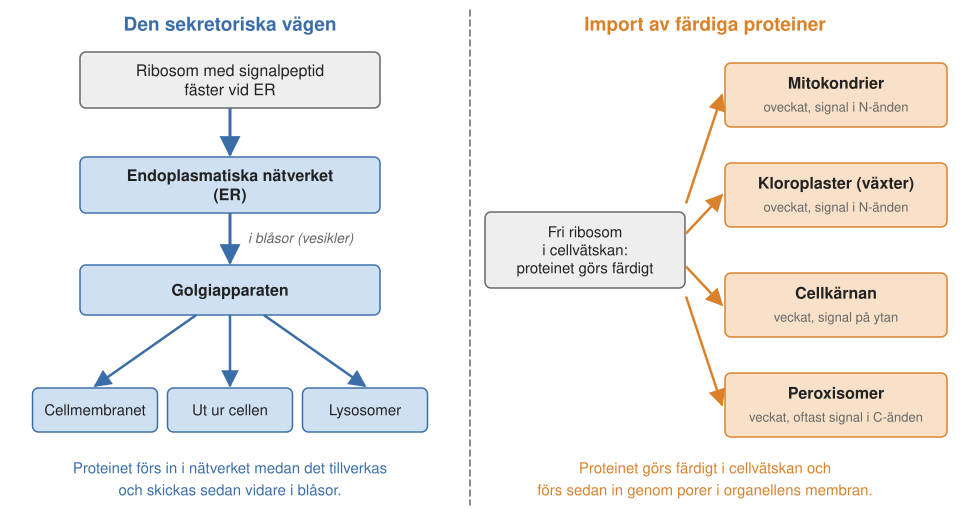
12.4 Den sekretoriska vägen
Vi börjar med den första huvudvägen. Den kallas sekretorisk eftersom den leder till sekretion, att proteiner utsöndras ur cellen, men den används också av proteiner som ska till cellmembranet eller lysosomerna. Många proteiner som vi känner till går den här vägen. Hit hör blodets proteiner, som albumin, transferrin (som transporterar järn) och antikropparna, våra försvarsproteiner mot inkräktare. Hit hör också kollagen och andra proteiner i bindväven mellan cellerna, hormoner som insulin, matsmältningsenzymer som trypsin och amylas från bukspottkörteln, och mjölkens proteiner, till exempel kasein.
Signalpeptiden och SRP
Signalpeptiden för den sekretoriska vägen är 15–30 aminosyror lång och består av tre delar (Figur 12.5, överst). Längst fram finns några positivt laddade aminosyror, ofta arginin eller lysin. I mitten finns en sträcka med vattenskygga (hydrofoba) aminosyror. Sist kommer några små aminosyror som markerar var signalpeptiden ska klippas av. Exakt vilka aminosyror som ingår varierar mycket mellan olika proteiner. Det som räknas är mönstret: laddat, vattenskyggt, litet.
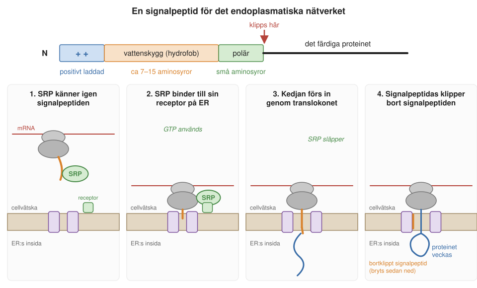
Hur läses då adresslappen? När ribosomen börjar tillverka ett sådant protein kommer signalpeptiden ut först. Den känns genast igen av en “medhjälpare” i cytosolen, en signaligenkännande partikel (eng. signal recognition particle, SRP). SRP är byggd av både protein och RNA. Den binder till signalpeptiden och bromsar proteintillverkningen, så att proteinet inte hinner bli färdigt ute i cytosolen. Sedan för den hela komplexet av ribosom, mRNA och växande protein till en SRP-receptor i det endoplasmatiska nätverkets membran. Både SRP och receptorn har bundit GTP, en energirik molekyl som liknar ATP. När de möts spjälkas GTP:t, SRP och receptorn släpper taget, och ribosomen hamnar direkt över en por i membranet, translokonet. Det är sådana ribosomer som sitter fast på det endoplasmatiska nätverket och ger det dess knottriga utseende.
Nu fortsätter tillverkningen, och den växande proteinkedjan skjuts rakt genom poren in i det endoplasmatiska nätverket. Där inne sitter ett enzym, signalpeptidas, som klipper bort signalpeptiden. Adresslappen behövs inte längre och bryts ned. Resten av proteinet veckas till sin färdiga form, ofta med hjälp av hjälpproteiner, och många proteiner får också kedjor av socker fästa vid sig.
Proteinet förs med andra ord in i det endoplasmatiska nätverket samtidigt som det tillverkas. Det är viktigt, för en veckad proteinkedja skulle inte kunna ta sig igenom den smala poren. Därför bromsar SRP tillverkningen tills ribosomen sitter på plats.
Proteiner som ska sitta i ett membran, till exempel i cellmembranet, tar samma väg in. Skillnaden är att de har sträckor av vattenskygga aminosyror som inte klipps bort. När en sådan sträcka passerar translokonet glider den ut åt sidan, in bland membranets lipider, och blir kvar där som en helix som går genom membranet (Avsnitt 8.2.2).
Blåsor som paket
Det endoplasmatiska nätverket är bara första stationen. Därifrån skickas proteinerna vidare i små membranblåsor, vesikler, som knoppas av från nätverkets membran (Avsnitt 7.8). Blåsorna förs till golgiapparaten, en stapel av platta membranpåsar där proteinerna förädlas och sorteras. Golgiapparaten har en mottagarsida, cis-sidan, och en avsändarsida, trans-sidan. Från trans-sidan knoppas nya blåsor av. En del går till cellmembranet, där de smälter samman med det och släpper ut sitt innehåll utanför cellen. En del går till lysosomerna, cellens återvinningsstationer. Proteiner som ska sitta i cellmembranet följer med i blåsornas membran och hamnar i cellmembranet när blåsan smälter samman med det.
Hur kan alla dessa blåsor hitta rätt? För sina upptäckter av maskineriet som styr blåsornas trafik fick James Rothman, Randy Schekman och Thomas Südhof Nobelpriset i fysiologi eller medicin 2013. Svaret har två delar: hur en blåsa bildas och hur den smälter samman med rätt mål. Under resan “klär blåsorna på sig” och “klär av sig”.
För att en bit membran ska knoppas av måste proteiner från cytosolen samlas på dess utsida och bilda ett skal, en sorts kappa, som böjer membranet till en bubbla. GTP används för att styra när skalet byggs upp. Ett välkänt sådant skalprotein är klatrin. Det består av trebenta enheter som fogas ihop till en bur av fem- och sexhörningar, ungefär som lapparna på en fotboll (Figur 12.6).
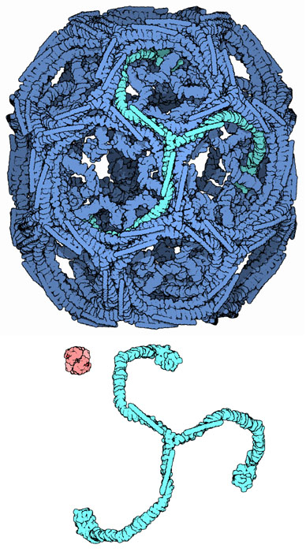
När blåsan har knoppats av måste den klä av sig skalet igen, annars kan den inte smälta samman med sitt mål. På blåsans yta och på målmembranet sitter proteiner som passar ihop, ungefär som de två halvorna av ett blixtlås. Bara när rätt blåsa möter rätt membran dras de ihop, så att membranen smälter samman. Det ger trafiken dess precision.
Trafiken går också åt andra hållet, och det visar hur genomtänkt systemet är. Om blåsor hela tiden knoppades av från det endoplasmatiska nätverket utan att något kom tillbaka, skulle nätverket till slut ta slut på membran. Dessutom följer en del proteiner som ska stanna i nätverket med av misstag. Därför går det också blåsor tillbaka från golgiapparaten till det endoplasmatiska nätverket. Proteiner som hör hemma i nätverket har en egen kort signal längst bak, fyra bestämda aminosyror. En receptor i golgiapparaten känner igen signalen och skickar proteinerna tillbaka, tillsammans med membranet i returblåsorna.
Hundratals gram protein om dagen
Allt detta pågår oavbrutet, eftersom proteinerna hela tiden byts ut. Proteiner lever olika länge, en del i minuter och andra i månader, men de flesta bryts så småningom ned och ersätts med nya. En vuxen människa i västvärlden äter ungefär 100 gram protein om dagen, trots att omkring hälften skulle räcka. Men i kroppens celler tillverkas och bryts ned flera gånger så mycket protein varje dag, flera hundra gram. En stor del av det går genom det endoplasmatiska nätverket, golgiapparaten och blåsorna. Cellen är en fabrik med ständigt löpande band.
12.5 In i mitokondrierna
Nu till den andra huvudvägen, import av färdiga proteiner, och till mitokondrien, den organell som Elzbieta Glaser har forskat om under nästan hela sitt yrkesliv. Hos människan tillverkas bara 13 av mitokondriens omkring tusen proteiner inne i mitokondrien. Mer än 98 procent tillverkas i cytosolen och måste importeras. För att förstå hur det går till måste vi först se hur mitokondrien är byggd.
En mitokondrie har två membran (Avsnitt 9.1.1 och Figur 12.7, till vänster). Det yttre membranet omsluter hela organellen. Det inre membranet är kraftigt veckat i instjälpningar, cristae, och innesluter mitokondriens innersta rum, matrix. Mellan de två membranen finns ett smalt mellanmembranutrymme. Ett protein som ska till matrix måste alltså ta sig igenom två membran.
Den klassiska bilden av mitokondrien, med cristae som tvärslåar, är mer än sjuttio år gammal. Den kommer från de första elektronmikroskopiska bilderna i början av 1950-talet, bland annat av svensken Fritiof Sjöstrand. Var proteinerna sitter i membranen har man kunnat se först på senare år. Med kryoelektrontomografi (Avsnitt 17.3.1) kan man i dag avbilda mitokondrier inne i frusna celler och se de enskilda proteinkomplexen. En studie från 2025, gjord i en encellig grönalg, visar att andningskedjans komplex sitter längs de platta delarna av cristae, ofta ihopkopplade i större grupper, medan ATP-syntaserna sitter parvis längs cristaes böjda kanter (Figur 12.7, till höger).
Mitokondriens egna ribosomer sitter vid det inre membranet och tillverkar sina få proteiner direkt in i det. Alla andra proteiner måste in utifrån, genom båda membranen.
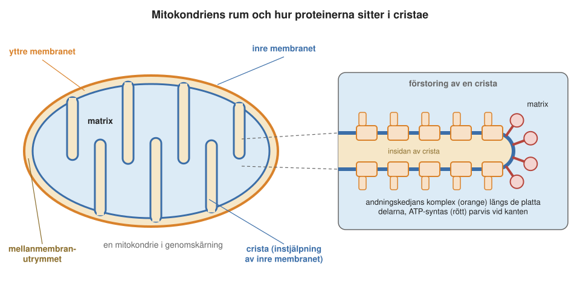
Adresslappen: en helix med två ansikten
Den första frågan är hur ett protein märks för mitokondrien. Mitokondriella proteiner har sin signalpeptid i N-änden, precis som de sekretoriska. Men den ser helt annorlunda ut, och den används på ett annat sätt: proteinet tillverkas i regel färdigt i cytosolen innan det förs in i mitokondrien.
Den mitokondriella signalpeptiden, som ofta kallas presekvens, är oftast 20–60 aminosyror lång och rik på positivt laddade aminosyror, särskilt arginin. Den viktigaste egenskapen syns först när man ser på dess form. Signalpeptiden veckar sig till en alfahelix, en spiral (Avsnitt 1.10.3), och aminosyrorna är ordnade så att de laddade hamnar på ena sidan av spiralen och de vattenskygga på den andra (Figur 12.8). En sådan helix, med ett vattenälskande och ett vattenskyggt ansikte, kallas amfifil. Det är detta mönster, och inte någon bestämd följd av aminosyror, som är mitokondriens adress.
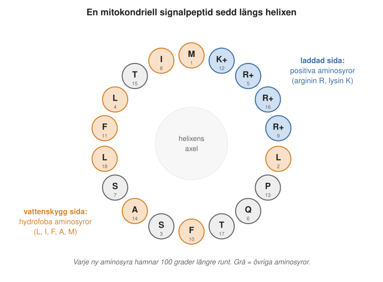
Signalpeptiden känns igen av en receptor på mitokondriens yttre membran. Länge trodde man att receptorn band till den laddade sidan av helixen. När man till slut fick se strukturen av receptorn med en bunden signalpeptid visade det sig vara tvärtom: receptorn griper tag i den vattenskygga sidan, medan de positivt laddade argininerna pekar ut från receptorn.
Två portar i rad
Efter receptorn kommer själva portarna. De kallas translokaser, och ett translokas är ett maskineri som för proteiner genom ett membran. I det yttre membranet sitter ett stort proteinkomplex som kallas TOM (eng. translocase of the outer membrane), och i det inre membranet ett som kallas TIM (translocase of the inner membrane). Tillsammans för de in proteinet i matrix (Figur 12.9).
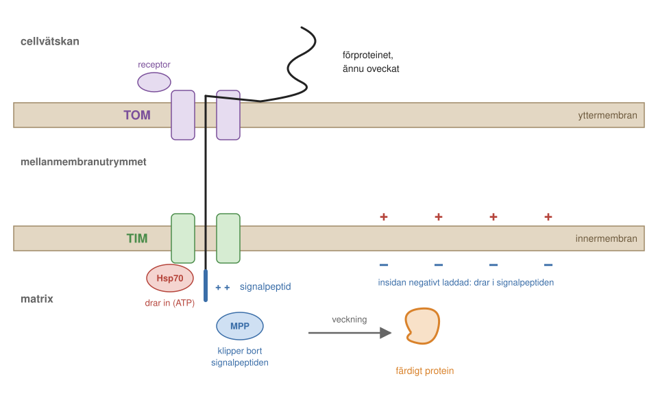
Varför måste proteinet vara oveckat när det förs in? Svaret syns i TOM-komplexets byggnad. Redan 1999 kunde man i elektronmikroskop se att komplexet har två kanaler sida vid sida. Men det tog nästan tjugo år innan man med kryoelektronmikroskopi kunde bestämma dess struktur i detalj, först 2017 och med ännu skarpare bilder 2019 av en japansk forskargrupp. Kanalerna bildas av ett protein som heter Tom40. Det är format som en tunna, och några mindre proteiner håller ihop två sådana tunnor. Varje kanal är ungefär två nanometer bred, lagom för en utsträckt proteinkedja men alldeles för smal för ett veckat protein. Därför måste mitokondriella proteiner föras in oveckade, som en tråd genom ett nålsöga.
Vad drar in proteinet?
Vad får kedjan att röra sig inåt genom portarna, i stället för att bli kvar eller glida tillbaka? Det finns två drivkrafter. Den första är elektrisk. Andningskedjan pumpar ut protoner ur matrix, så att det inre membranet blir laddat som ett batteri, negativt på insidan och positivt på utsidan (Avsnitt 9.1.1). Den positivt laddade signalpeptiden dras då mot den negativa insidan, på samma sätt som plus och minus dras till varandra.
Den andra drivkraften kommer från insidan. Där sitter en chaperon, ett hjälpprotein som binder till andra proteiner, kallad mitokondriellt Hsp70. Den griper tag i kedjan när den kommer in. Om den aktivt drar in kedjan, som en sjöman som halar in ett rep hand över hand med energi från ATP, eller om den bara hindrar kedjan från att glida tillbaka, som en spärrhake, diskuterades länge. I dag tror man att båda sker. Långa proteiner som delvis hunnit vecka sig i cytosolen måste dras in aktivt. Korta och oveckade proteiner rör sig fram och tillbaka av sig själva genom värmerörelser, och då räcker det att Hsp70 griper tag i dem för varje bit som kommit in, så att de bara kan röra sig inåt. Den modellen brukar kallas en brownsk spärrhake (eng. Brownian ratchet). Mer om chaperoner följer i Kapitel 13.
Många vägar inne i mitokondrien
Alla mitokondriella proteiner ska inte till matrix. En del ska sitta i det yttre eller inre membranet, andra i mellanmembranutrymmet. Därför finns det flera olika importvägar, med var sin uppsättning portar och hjälpproteiner, beroende på om proteinet ska till matrix, till något av membranen eller till utrymmet mellan dem. Alla börjar med TOM.
Varje mitokondrie innehåller tusentals kopior av importmaskinerna, och mängder av proteiner står hela tiden i kö i cytosolen för att komma in. Det är en trafik som skulle behöva trafikpoliser, och troligen finns det också sådana: många proteiner i cytosolen påverkar transporten, men alla är ännu inte kända.
Med så mycket trafik får fel stora följder. Fel i importmaskineriet kan ge allvarliga sjukdomar: muskelsjukdomar, neurologiska sjukdomar, epilepsi och till och med en ärftlig form av dövhet, som beror på ett defekt hjälpprotein i mellanmembranutrymmet.
Fel kan också uppstå i själva adresslappen. Vid den ärftliga sjukdomen primär hyperoxaluri gör en mutation hos en del patienter att ett leverenzym som ska till peroxisomerna i stället hamnar i mitokondrierna. Där kan det inte göra sitt arbete, ett avfallsämne ansamlas, och patienten får njursten redan i unga år. Felet sitter alltså i levern, men det är njurarna som skadas. Sjukdomen nämndes som exempel när Blobel fick Nobelpriset.
Saxen som klipper av adresslappen
När signalpeptiden har kommit in i matrix klipps den bort av ett enzym som heter mitokondriellt processande peptidas, förkortat MPP. Det är en svår uppgift. Tusen olika proteiner har tusen olika signalpeptider, och det enda de har gemensamt är den amfifila helixen. Ändå ska ett och samma enzym klippa av alla på rätt ställe. När man jämförde många signalpeptider fann man en ledtråd: många har ett arginin två eller tre aminosyror före klyvningsstället. Men inte alla, så enzymet måste också känna igen formen. Efter MPP kan ytterligare några enzymer putsa av enstaka aminosyror.
Var i mitokondrien MPP sitter visade sig vara en överraskning. Elzbieta Glasers forskargrupp vid Stockholms universitet har studerat MPP i växter. Hos råtta och bakjäst hade man funnit att enzymet består av två delar, kallade α och β, och att det finns löst i matrix. Man hade också lagt märke till att delarna liknar två stora proteiner i andningskedjans komplex III.
När en doktorand i gruppen skulle ta reda på var MPP fanns i växternas mitokondrier hittade hon det inte alls i matrix, bara i membranen. Hon fick först höra att hon antagligen hade förväxlat proverna, men resultatet blev detsamma gång på gång. Det visade sig att MPP hos växter är en del av själva komplex III i det inre membranet. Komplexet har alltså två uppgifter på en gång: det för elektroner vidare i andningskedjan och klipper av signalpeptider.
Hos andra organismer finns MPP på det ena eller andra stället, eller på båda (Figur 12.10). Det tyder på att de två funktionerna en gång satt i samma komplex och sedan har skilts åt under evolutionen.
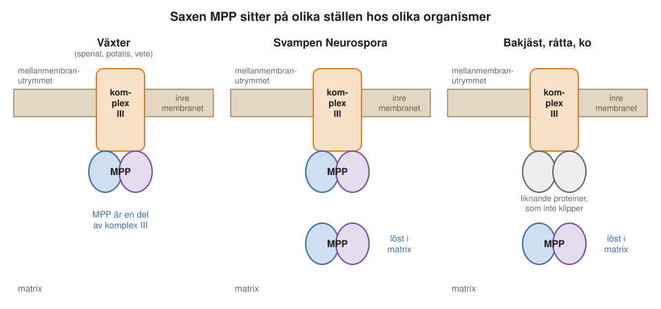
Städaren och Alzheimers sjukdom
Vad händer med de bortklippta signalpeptiderna? De kan inte bara lämnas kvar. Eftersom de har en vattenskygg och en laddad sida kan de tränga in i membran. Om de skulle göra hål i mitokondriens inre membran skulle protonerna läcka tillbaka, och utan protongradient kan inget ATP tillverkas. Ämnen som läcker protoner genom membranet kallas frikopplare. Ett sådant ämne, dinitrofenol, såldes en gång som bantningsmedel, med dödliga följder (Avsnitt 2.9.3). Signalpeptiderna måste alltså städas bort.
Glasers grupp hittade enzymet som gör det och kallade det PreP (eng. presequence protease). Med hjälp av kristallografer bestämde man dess struktur med en upplösning på 2,1 ångström. PreP består av två halvor som kan sluta sig om en peptid ungefär som ett musselskal. Inne i den slutna kammaren klipps peptiden i småbitar, och sedan öppnas skalet igen för nästa peptid.
PreP visade sig också ha en koppling till en vanlig sjukdom. När forskarna jämförde PreP:s aminosyrasekvens med andra enzymer såg de att det liknar ett enzym som bryter ned amyloid-beta, den lilla peptid som klumpar ihop sig till plack i hjärnan vid Alzheimers sjukdom (Avsnitt 15.4). En morgon hörde Elzbieta Glaser på radions vetenskapsnyheter att en amerikansk forskare som studerade nedbrytningen av amyloid-beta besökte Karolinska institutet. Hon ringde radion, fick namnen och ringde sedan Karolinska. Det blev början på ett samarbete.
Det visade sig att amyloid-beta kan ta sig in i mitokondrierna och att PreP kan bryta ned det. Om PreP saknas eller har skadats, till exempel av reaktiva syreföreningar, kan amyloid-beta i stället binda till ett annat mitokondriellt enzym. Det kan i sin tur sätta igång apoptos, programmerad celldöd: proteinet cytokrom c läcker ut ur mitokondrien, skadliga syreföreningar bildas och cellens DNA bryts ned.
En hypotes är därför att PreP skyddar nervcellernas mitokondrier mot amyloid-beta (Figur 12.11), och att sätt att förstärka det skyddet skulle kunna bli en väg mot nya behandlingar. Det är ännu forskning, inte en behandling. Människans motsvarighet till PreP studeras i dag av flera grupper med just Alzheimers sjukdom i tankarna.
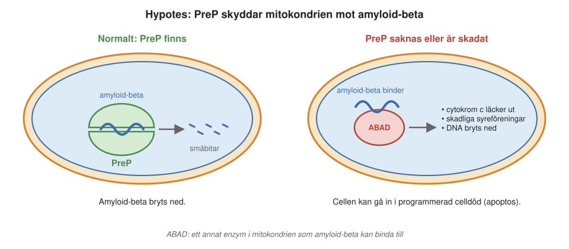
Mitokondrierna är inte heller isolerade öar, och även deras kontakter med resten av cellen har kopplats till sjukdom. På vissa ställen ligger de tätt intill det endoplasmatiska nätverket, och på senare år har man förstått att dessa kontaktpunkter är viktiga. Där överförs bland annat kalciumjoner och lipider mellan organellerna. Störningar i kontaktpunkterna har kopplats till Alzheimers sjukdom, typ 2-diabetes och cancer.
Därmed är importen till mitokondrien klar. När signalpeptiden är borta och städad ska det färdiga proteinet vecka sig till sin rätta form, och det sker med hjälp av chaperoner. Dem återkommer vi till i Kapitel 13.
12.6 Kloroplaster: samma princip, andra maskiner
Växternas kloroplaster står inför samma uppgift som mitokondrierna: de flesta av deras proteiner måste föras in utifrån. Kloroplasten har, precis som mitokondrien, ett yttre och ett inre membran. Innanför dem finns dessutom de platta membranpåsarna tylakoiderna, där fotosyntesen fångar ljuset (Avsnitt 7.7). Kloroplasternas import fungerar i princip som mitokondriernas. Proteinerna tillverkas i cytosolen med en signalpeptid i N-änden, förs in oveckade genom ett komplex i det yttre membranet och ett i det inre, får signalpeptiden bortklippt och veckas med hjälp av chaperoner. Komplexen heter här TOC och TIC (translocon at the outer/inner envelope of chloroplasts). Så mitokondrien har sin TOM och TIM, och kloroplasten sin TOC och TIC (Figur 12.12).
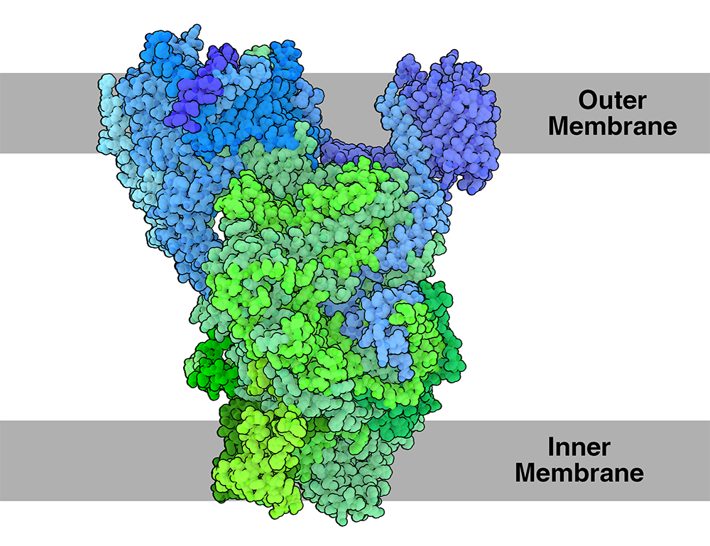
En växtcell har både mitokondrier och kloroplaster. Hur kan den skilja proteiner som ska till den ena från dem som ska till den andra, när båda har en signalpeptid i N-änden? När Glasers grupp jämförde hundratals signalpeptider fann de att likheterna är stora. Båda sorterna saknar nästan helt negativt laddade aminosyror. Men kloroplastens signalpeptider är i genomsnitt längre, rikare på aminosyrorna serin och treonin och har betydligt färre arginin än mitokondriernas. Klyvningsstället ser också annorlunda ut, och kloroplasterna har ett eget enzym som klipper. Dessutom finns det hjälpproteiner i cytosolen som känner igen kloroplastens signalpeptider och för dem rätt. Små skillnader i adresslappen räcker alltså för att skilja två mycket lika postadresser åt.
12.7 In i kärnan: veckade proteiner genom stora porer
Proteiner som ska in i cellkärnan importeras på ett helt annat sätt. Det tillverkas inga proteiner i kärnan, så alla kärnproteiner måste in från cytosolen. Men de går inte genom smala portar som i mitokondrien. I stället passerar de genom kärnporerna, mycket stora hål i kärnhöljets två membran (Avsnitt 7.6). Kärnporerna är byggda av omkring 30 olika proteiner i många kopior och hör till cellens största strukturer.
Den stora skillnaden mot mitokondrierna är att kärnproteinerna är färdigveckade när de förs in. Deras adresslapp är därför ingen signalpeptid i änden av kedjan, utan en kärnsignal, en grupp positivt laddade aminosyror som sticker ut på ytan av det veckade proteinet. Signalen klipps inte bort.
Kärnsignalen känns igen av en bärare i cytosolen, ett importin. Importinet binder till proteinet och tar det med sig genom poren. Inne i kärnan släpper importinet sin last och åker tillbaka ut till cytosolen för att hämta nästa. Som vi såg i Avsnitt 7.6 fungerar det eftersom importinerna, men inte vanliga proteiner, kan glida genom den gel av oordnade proteinsvansar som fyller porens mitt. Genom samma porer, men åt motsatt håll, går mRNA ut ur kärnan till ribosomerna i cytosolen.
12.8 Peroxisomer: en adresslapp i slutet
Peroxisomerna är små organeller med omkring 50 olika enzymer. De bryter ned bland annat vissa fettsyror. Vid flera av reaktionerna bildas väteperoxid, som är giftigt för cellen men genast bryts ned av enzymet katalas. Peroxisomerna har inget eget DNA, så alla deras proteiner måste importeras.
Länge trodde man att peroxisomerna importerade proteiner på samma sätt som mitokondrierna. Men så visade det sig att de kan ta in färdigveckade proteiner, till och med hela komplex av flera proteiner, och i försök till och med små guldkulor klädda med rätt signal. Det överraskade alla.
Förklaringen ligger i adresslappen. De flesta peroxisomala proteiner har sin adresslapp i slutet av kedjan, i C-änden. Den är bara tre aminosyror lång, oftast serin, lysin och leucin, och klipps inte bort. Eftersom signalen tillverkas sist är proteinet redan färdigt och veckat när signalen dyker upp. Ett fåtal peroxisomala proteiner har i stället en signal i N-änden som klipps bort.
Signalen känns igen av en rörlig receptor i cytosolen. Receptorn binder lasten och tar sig in genom peroxisomens membran genom en kanal som är fylld av ett nät av proteinsvansar, påfallande likt kärnporens gel. På insidan släpper lasten.
För att receptorn ska komma ut igen märks den med ett litet protein, ubikvitin, som fungerar som en etikett. Etiketten känns igen av en ATP-driven maskin som drar ut receptorn ur membranet, så att den kan hämta nästa protein. Ärftliga fel i detta maskineri gör att peroxisomerna inte kan fyllas med enzymer. Det ger svåra sjukdomar hos små barn, till exempel Zellwegers syndrom.
12.9 Fyra organeller, fyra sorters adresslappar
Vi kan nu sammanfatta de olika adresslapparna:
| Mål | Var signalen sitter | Klipps bort? | Proteinet förs in | Port |
|---|---|---|---|---|
| Endoplasmatiska nätverket | N-änden | ja | medan det tillverkas, oveckat | translokonet |
| Mitokondrier | N-änden (amfifil helix) | ja | efter tillverkningen, oveckat | TOM och TIM |
| Kloroplaster | N-änden | ja | efter tillverkningen, oveckat | TOC och TIC |
| Cellkärnan | på ytan av proteinet | nej | veckat, med importin | kärnporen |
| Peroxisomer | oftast C-änden (tre aminosyror) | nej | veckat, med en rörlig receptor | peroxisomens kanal |
Bakom tabellen finns samma idé som Blobel formulerade: varje protein bär sin adress i sin egen aminosyrakedja. Till varje adress hör en receptor som läser den och ett translokas som för proteinet genom membranet. Signalen klipps av, processas, om den sitter i början av kedjan, men inte om den behövs igen, som kärnsignalen.
12.10 Sammanfattning
- Människan har omkring 20 000 gener som kodar för proteiner, men genom olika varianter av samma gen blir det långt fler proteiner.
- Nästan alla proteiner kodas av DNA i cellkärnan och tillverkas av ribosomer i cytosolen. Mitokondrier och kloroplaster har eget DNA, en rest av de bakterier de en gång var, men det kodar bara för en liten del av deras proteiner.
- Proteiner har inbyggda adresslappar, signaler i aminosyrakedjan, som styr dem till rätt ställe. Günter Blobel fick Nobelpriset 1999 för den upptäckten.
- I den sekretoriska vägen känns signalpeptiden igen av SRP medan proteinet tillverkas. Proteinet förs in i det endoplasmatiska nätverket genom translokonet och skickas sedan vidare i blåsor via golgiapparaten.
- Proteiner till mitokondrierna tillverkas färdigt i cytosolen och förs in oveckade genom TOM och TIM. Signalen är en amfifil helix, och membranets laddning och chaperonen Hsp70 drar in kedjan. MPP klipper bort signalpeptiden och PreP bryter ned den.
- Kloroplaster importerar på liknande sätt med TOC och TIC, men deras signalpeptider skiljer sig tillräckligt för att växtcellen ska kunna sortera rätt.
- Kärnproteiner och peroxisomala proteiner förs in färdigveckade, med hjälp av rörliga receptorer i cytosolen.
- Fel i adresslappar och importmaskiner ger sjukdomar, och PreP kan ha en roll vid Alzheimers sjukdom.
12.11 Nyckelbegrepp
- proteintrafik – Transporten av nytillverkade proteiner från ribosomerna till det ställe i eller utanför cellen där de ska arbeta.
- cytosol – Cellvätskan, det vill säga cellens inre utanför organellerna. Här tillverkas nästan alla proteiner på ribosomer.
- endosymbiontteorin – Teorin att mitokondrier och kloroplaster härstammar från bakterier som en gång togs upp av en annan cell och fortsatte att leva där.
- mitokondriellt DNA – Mitokondriens eget lilla DNA. Hos människan en ring med 16 569 baspar som kodar för 13 proteiner. Ärvs bara från modern.
- signalpeptid – En kort sträcka i början av en proteinkedja som fungerar som adresslapp och styr proteinet till rätt ställe i cellen. Klipps oftast bort när proteinet kommit fram.
- N-ände – Den ände av en proteinkedja som tillverkas först (kallas också N-terminalen). Den andra änden kallas C-änden.
- sekretoriska vägen – Vägen för proteiner som ska ut ur cellen, till cellmembranet eller till lysosomerna: in i det endoplasmatiska nätverket medan de tillverkas och sedan vidare i blåsor via golgiapparaten.
- SRP – Signaligenkännande partikel (eng. signal recognition particle). Ett komplex av protein och RNA som känner igen signalpeptiden och för ribosomen till det endoplasmatiska nätverket.
- translokon – En por i det endoplasmatiska nätverkets membran som en växande proteinkedja skjuts igenom.
- signalpeptidas – Ett enzym som klipper bort signalpeptiden när proteinet har förts in i det endoplasmatiska nätverket.
- klatrin – Ett protein vars trebenta enheter bildar en bur runt en bit membran, så att den kan knoppas av som en blåsa.
- presekvens – Signalpeptiden i N-änden på mitokondriella proteiner. Bildar en amfifil helix med många positivt laddade aminosyror.
- amfifil helix – En alfahelix med vattenälskande (laddade) aminosyror på ena sidan och vattenskygga på den andra.
- translokas – Ett proteinkomplex som för proteiner genom ett membran, till exempel TOM och TIM i mitokondrierna.
- TOM och TIM – Translokaserna i mitokondriens yttre (TOM) och inre (TIM) membran, som för in proteiner från cytosolen.
- TOC och TIC – Kloroplastens motsvarigheter till TOM och TIM, i kloroplastens yttre och inre membran.
- MPP – Mitokondriellt processande peptidas, enzymet som klipper bort signalpeptiden när proteinet kommit in i matrix. Hos växter är det inbyggt i andningskedjans komplex III.
- PreP – Ett enzym i mitokondrierna som bryter ned bortklippta signalpeptider. Kan också bryta ned amyloid-beta.
- Hsp70 – En chaperon som binder till oveckade proteinkedjor. I mitokondriens matrix hjälper den till att dra in importerade proteiner.
- kärnsignal – En grupp positivt laddade aminosyror på ytan av ett protein som visar att det ska in i cellkärnan. Klipps inte bort.
- importin – En bärare i cytosolen som binder proteiner med kärnsignal och bär dem genom kärnporen in i kärnan.
- peroxisom – En liten organell med omkring 50 enzymer, bland annat katalas, som bryter ned väteperoxid. Dess enzymer importeras färdigveckade från cytosolen.
- apoptos – Programmerad celldöd, då cellen på ett ordnat sätt tar livet av sig själv. Kan sättas igång av signaler från mitokondrierna.
12.12 Testa dig själv
Flervalsfrågor
Välj ett svar och tryck på Rätta. Svarsalternativen visas i ny ordning varje gång.
Fundera vidare
12.1 Använd liknelsen med en postterminal för att förklara hur proteinerna i en cell hamnar rätt. Var håller liknelsen, och var haltar den?
12.2 Jämför den sekretoriska vägen med importen till mitokondrierna. Vad är lika och vad skiljer?
12.3 En växtcell har både mitokondrier och kloroplaster, och proteiner till båda har en signalpeptid i N-änden. Hur kan cellen ändå skicka dem rätt?
12.4 Varför kan en mutation i cellkärnans DNA ge en mitokondriell sjukdom? Ge ett exempel från kapitlet.
Hjälp oss att förbättra kapitlet
Hittade du ett fel, eller något som var svårt att förstå? Skicka ett förslag i förslagsformuläret (kräver inloggning med SU-konto). Lärarna läser alla förslag inför nästa version av boken.
12.13 Läs mer
- Nobelpriset i fysiologi eller medicin 1999, pressmeddelandet om Günter Blobels upptäckt av proteinernas adresslappar, med tydliga bilder (på engelska).
- Nobelpriset i fysiologi eller medicin 2013, om hur blåsorna i cellen hittar rätt (på engelska).
- Endosymbiontteorin på svenska Wikipedia, om hur mitokondrier och kloroplaster en gång var fritt levande bakterier.
- Protein targeting på engelska Wikipedia, en översikt över cellens olika adresslappar.
- TOC-TIC Translocon och Clathrin, Molecule of the Month på PDB-101 (på engelska).